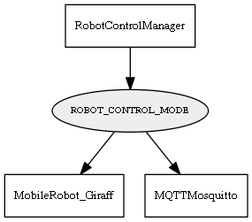

Global overview
All modules
All variables
All commands
Mission files
Pipelines
Variable: ROBOT_CONTROL_MODE
Variable info:
Variable name
Short description
Who publishes it?
Who subscribes to it?
ROBOT_CONTROL_MODE
The Giraff working mode: 0=Manual=Pilot, 2=Autonomous=OpenMORA
RobotControlManager
MobileRobot_Giraff
MQTTMosquitto
Variable graph:

Detailed description:
The Giraff working mode: 0=Manual=Pilot, 2=Autonomous=OpenMORA
Page generated by
Mooxygen 1.1.0
at Thu Jan 22 11:30:21 2015